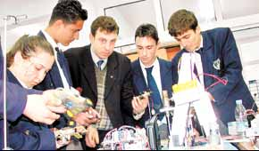

| 
Ýzmir'de endüstri meslek lisesi öðrencileri artýk robot yapmaya
baþladý. Bornova Mazhar Zorlu Anadolu Teknik ve Plastik Endüstri
Meslek Lisesi, Endüstriyel Otomasyon Teknolojileri Bölümü
öðrencileri Japon uzmanlardan da robot üretmenin inceliklerini
öðreniyor.
Okulda
görev yapan 6 Japon ve 10 Türk öðretmen, öðrencilerle birlikte
Japonya'daki robot teknolojisini Türkiye'ye taþýmak için gece
gündüz çalýþýyor. 2 yýldýr Türkiye'de çalýþan Japon uzmanlar,
3 yýl daha Türkiye'de kalarak teknoloji transferi yapacak.
Okulda eðitim gören öðrencilerin en büyük hayali ise Japonya'da
olduðu gibi Türkiye'de robot müsabakalarý düzenlemek. Okul,
yarýþmayla ilgili çalýþmalarýný devam ettiriyor.
Okuldaki
çalýþmalar, Türk hükümeti ile Japon uluslararasý iþbirliði
teþkilatý (JICA) arasýnda imzalanan protokol çerçevesinde
yürütülüyor. 6 Japon uzman 2001 Nisan'ýnda Türkiye'ye gelerek
çalýþmalara baþladý. Japonlarla çalýþacak Türk öðretmenler
ise Ankara'da 4,5 ay Ýngilizce kursu aldý. Kurstan sonra Türk
ve Japon öðretmenler eþleþtirildi. Bu ekipler, 2 yýldýr gece
gündüz çalýþarak teknoloji transferi yapmaya çalýþýyor. Japon
öðretmenlerin yazdýðý Ýngilizce bilgiler Türkçeye uyarlanýyor.
Konularýn pekiþtirilmesi için gerekli görüldüðü takdirde burada
çalýþan uzmanlarýn dýþýnda Japonya'dan okula 3 haftalýðýna
kýsa dönem uzmanlar gelip gidiyor. Türk öðretmenler de sýrayla
Japonya'ya giderek öðrendiklerini pekiþtiriyor. Japonlardan
robot teknolojisini öðrenen öðretmenler, önümüzdeki yýllarda
diðer teknik liselere de bu teknolojiyi taþýyacak.
Robot
eðitimi gören öðrenciler, Ýngilizce, matematik, bilgisayar,
elektronik, mekanik, hidrolik gibi dersler alýyor. Bölümde
okuyan öðrenciler, Orta Öðretim Kurumlarý Öðrenci Seçme ve
Yerleþtirme Sýnavý ile belirleniyor. Bölümde 55'i hazýrlýk
olmak üzere toplam 155 öðrenci eðitim görüyor. Þu sýralar
daha çok robotlarla ilgili temel dersleri gören öðrenciler,
önümüzdeki yýl robotlarla daha içli dýþlý olacak. Hiçbir öðrenci
henüz kendi baþýna robot üretmedi. Çünkü robotlarla ilgili
parçalar çok pahalý. Tek bir sensörün ücreti bile 150 milyon
lirayý buluyor.
Japonya'da
olduðu gibi Türkiye'de de robot yarýþmasý düzenlemek isteyen
okul, konuyla ilgili çalýþmalarýný devam ettiriyor. Yarýþmayla
ilgili takvim, hazýr olduðunda kamuoyuna açýklanacak. Teknik
öðretmen Egemen Döðer, "Bir robotu yapabilmek için bu konularda
teknik bilgiye ihtiyaç vardýr. Bu konularýn bilinmesi tabii
ki bir robotun yapýlabilmesi için yeterli deðildir. Düþünebilme,
tasarlayabilme ve uygulayabilme yeteneklerine sahip olmak
gerekmektedir. Biz okulumuzda öðrenci merkezli bir eðitim
ile teknik bilgi ile beraber bu yetenekleri öðrencilerimize
kazandýrmaya çalýþýyoruz."
Daha
fazla bilgi için:
www.mazharzorlu.k12.tr
> Mazhar Zorlu Anadolu Teknik ve Plastik Endüstri Meslek
Lisesi
www.mazharzorlu.k12.tr/webtr/index.php
> "Anadolu Teknik Liselerinde Endüstriyel Otomasyon
Bölümleri" Projesi ana sayfasý.
Okulun
Tarihçesi:
Devlet-Millet iþbirliði ile Mesleki- Teknik Öðretim ve sanayi
kaynaþmasýnýn en güzel örneklerinden olan okulumuz, hayýrsever
iþadamý Mazhar Zorlu tarafýndan yaptýrýlmýþtýr.
Ýzmir'de
bir Endüstri Meslek Lisesi yaptýrma isteðinde olan Ege Plast
(Ege Plastik ve Sanayi A.Þ.) ve Ege Yýldýz (Plastik Pazarlama
Tic. Ve San. A.Þ.) Þirketleri ile, Ýzmir Valiliði Milli Eðitim
Müdürlüðü arasýnda 08.02.1996 tarihinde bir protokol yapýlmýþtýr.
Bu protokol ile, yapýlacak olan Endüstri Meslek Lisesi'nin
Türkiye'de ve özellikle bölgemizde geliþen Plastik Sektörünün
ihtiyacý olan yetiþmiþ teknik insan gücünü karþýlamak amacý
ile, Plastik Endüstri Meslek Lisesi olmasý kararlaþtýrýlmýþtýr.
Böylece bu güne kadar ülkemizdeki örgün eðitim içersinde yer
almayan Plastik Ýþleme meslek dalýný, örgün eðitim içersine
alan Türkiye'nin ilk ve tek Plastik Endüstri Meslek Lisesi'nin
kuruluþu gerçekleþtirilmiþtir.
Temeli
1 Þubat 1997 tarihinde atýlan okulumuzun inþaatý, 1998 yýlýnýn
Haziran ayýnda tamamlanmýþtýr. Baþlangýçta sadece Plastik
Endüstri Meslek lisesi olarak düþünülen okulumuzun, fiziki
yapýsýnýn uygunluðu ve bölge ihtiyaçlarý göz önüne alýnarak
Milli Eðitim Bakanlýðý tarafýndan 20/08/1998 tarih ve 6210
sayýlý onayla bünyesine Anadolu Teknik Lisesi ilave edilmiþtir.
22
dönüm arazi üzerine kurulmuþ olan okulumuzun 2686,32 M2 öðretim
binasý, 493,68. M2 idare binasý, 2421,44 M2 atölye binasý
olmak üzere toplam 560 1,44M2 kapalý alaný mevcuttur.
Anadolu
Teknik Lisesi bünyesinde açýlan Endüstriyel Otomasyon Teknolojileri
Laboratuarlarýný oluþturmak amacýyla, Ýzmir Milli Eðitim Müdürlüðü'nün
onayý ile, Öðretim Binasýnýn 2. Katýnda ve atölye binasýnda
tadilat yapýlmýþtýr.
Endüstriyel
Otomasyon Teknolojileri Bölümü Hükümetimiz ile Japon Hükümeti
arasýndaki teknik iþbirliði anlaþmasýna dayalý olarak kurulmaktadýr.
Bu anlaþmaya göre bakanlýðýmýz ile Japon uluslararasý iþbirliði
teþkilatý (JICA) arasýnda bir proje protokolü imzalanmýþtýr.
Bu proje protokolüne göre;
Bu
bölümün uluslararasý standartlarda donatýlmasý, bu alanda
eðitim verecek öðretmenlerin yurtdýþýnda eðitilmeleri Japon
hükümeti tarafýndan gerçekleþtirilecektir. Ayrýca Proje süresi
olan beþ yýl boyunca 6 Japon uzman okulumuzda görevlendirilmiþtir.
Japon uzmanlar bölümde görev alacak Türk öðretmenler ile birlikte,
teknoloji transferini, öðretim programlarýnýn hazýrlanýp geliþtirilmesini
ve bu bölümün Türkiye'deki diðer Anadolu Teknik Lise'lerine
yaygýnlaþtýrýlmasýný gerçekleþtireceklerdir.
Bölümün
kurulacaðý fiziki ortamlarýn hazýrlanmasý, hizmetlerin yürütülmesi
için gerekli personelin saðlanmasý, projenin saðlýklý ve amacýna
uygun olarak yürütülmesi ile ilgili önlemlerin alýnmasý bakanlýðýmýz
yükümlülüðüne verilmiþtir.
Projede
görev alacak Türk öðretmenler seçilerek, 2001 yýlýnýn Mart
ayýndan itibaren Ankara'da 5 aylýk Ýngilizce kursuna alýnmýþlardýr.
Bu öðretmenler 2001 yýlýnýn Kasým ayýndan itibaren dönüþümlü
olarak Japonya'ya giderek, bölüm ile ilgili konularda teknik
bilgi alacaklardýr.
Plastik
Ýþleme Bölümü:
Amacý
Bu
bölümde plastikleri genel anlamda tanýyan, uygun iþler için
uygun plastik malzemeyi seçmesini bilen, plastiklerin iþlenmesi
sýrasýnda karþýlaþabileceði problemleri nasýl çözeceðinin
yöntemlerini bilen, plastik iþleme tezgahlarýný tanýyan ve
endüstride bulunan tezgahlarýn kullanýlmasý hakkýnda teorik
bilgi ve pratik beceriye sahip teknik ara insan gücü yetiþtirilir.
Öðretim
Programý
IX.
Sýnýfta öðrencilere ortak genel kültür dersleri ve bölüm derslerinden
Teknik Resim, Polimer Kimya, Bilgisayar, Ölçme ve Kontrol
Meslek Teknolojisi ve Atelye dersleri ile temel eðitim verilir.
IX.
sýnýf atelye ders programý temel tesviyecilik iþlemleri (eðeleme,
delme, kesme, klavuz, pafta çekme vb.) ve tesviye atelyesinde
bulunan tezgahlarý ( torna, freze, taþlama ) tanýma ve iþlem
basamaklarýna göre uygulama yapmak.
X.
ve XI. Sýnýflarda meslek dersleri daha aðýrlýklý olmak üzere
Teknik Resim, Plastik Malzeme Teknolojisi, Plastik Kalýp Bilgisi,
Plastik Makineleri, Otomatik Kontrol Sistemleri, Bilgisayarlý
Tasarým ve Atelye derslerini de görüp yeterlilik kazanýrlar.
Atelye dersinde eðitim - öðretim konularýnýn kapsamý plastik
iþleme makinelerinin ( Enjeksiyonlar, Ekstruderler, Vakum
Makineleri, Termoset Presler, Rotasyon Makineleri vb.) fonksiyonlarý,
güvenlik tedbirleri, üretime alýnmalarý. Öðrencilere bu konularda
temel yeterlilik kazandýrýlýr.
Öðrenci
Ýlgisi ve Çalýþma Ortamý
Makinecilik,
kalýpçýlýk, bilgisayar, mekanik, hidrolik-pnömatik ve plastiðe
ilgi duyanlar plastik iþleme meslek dalýnda baþarýlý olabilirler.
Plastiðin
üretildiði ve iþlendiði bütün sanayi sektörlerinde çalýþabilir,
kolaylýkla iþ bulabilirler.
|